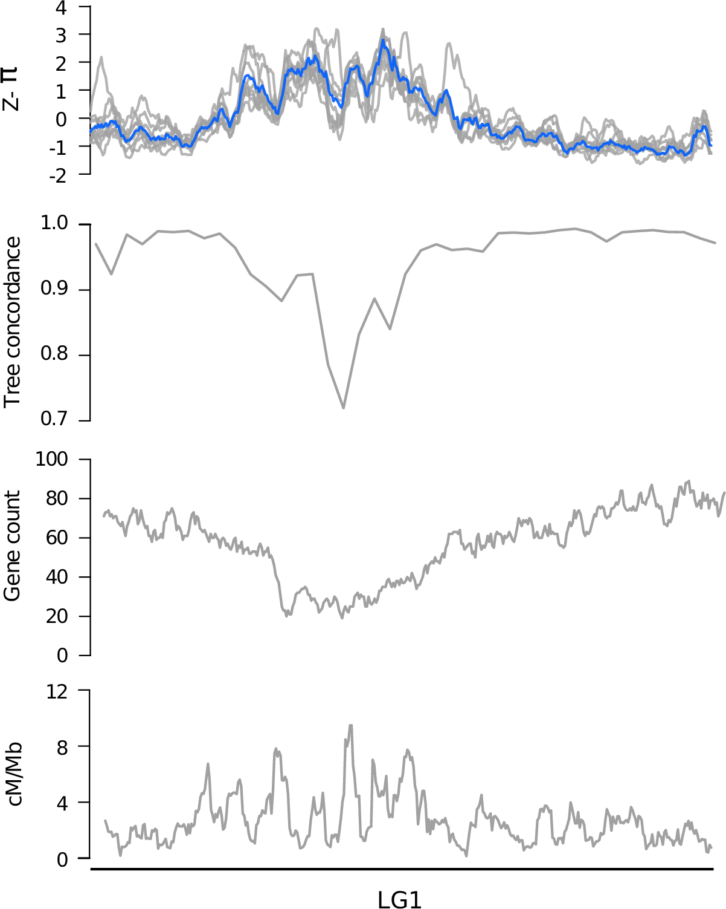
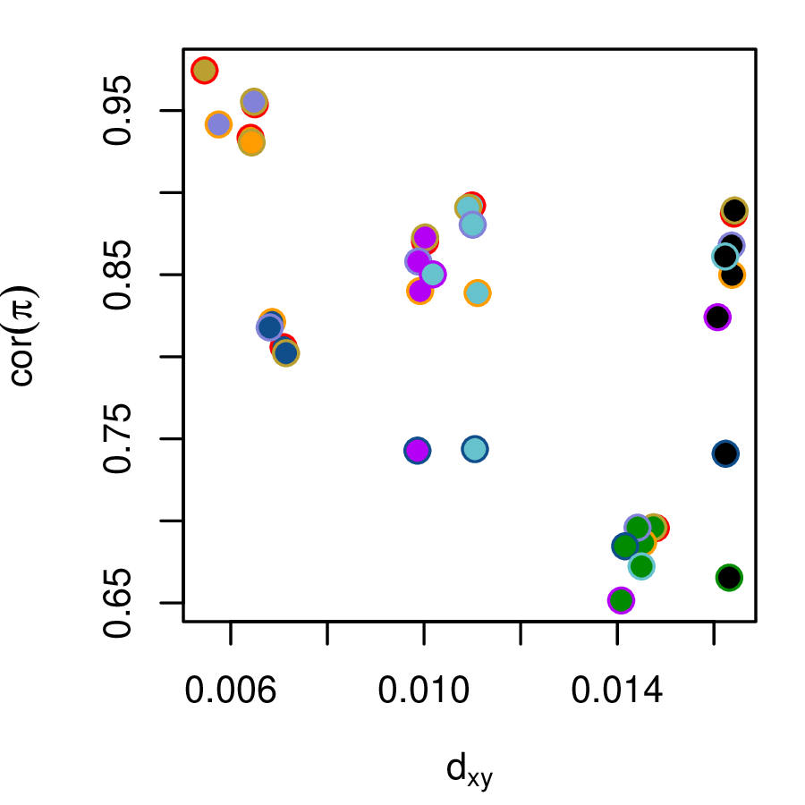
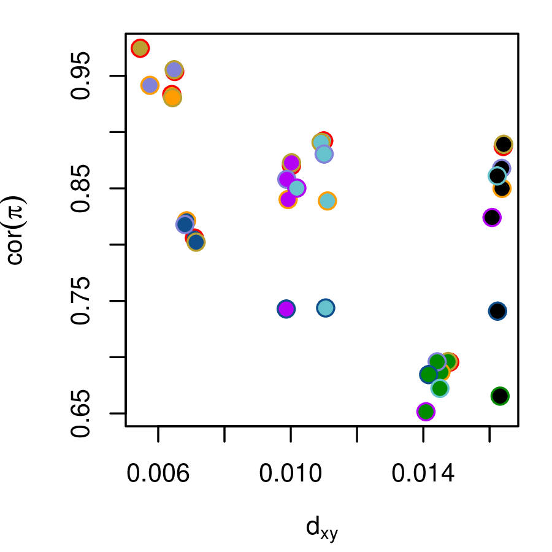
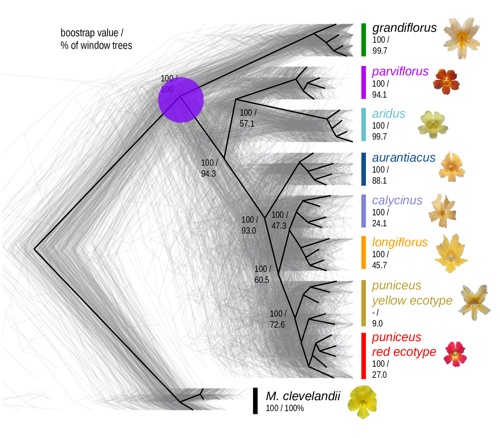
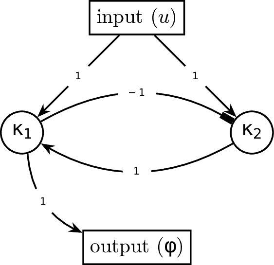

Genomic landscapes and fitness ridges
across the speciation continuum
College de France // May 2019


Corbett-Detig et al 2015
\[ \begin{aligned} \pi &= \text{ (within-pop diversity) } \\ d_{xy} &= \text{ (between-pop divergence) } \\ F_{ST} &= \text{ (relative differentiation) } \end{aligned} \]

- linked selection
The indirect effects of selection on genomic locations that are linked to the sites under selection by a lack of recombination.


0. Neutrality

1. A “hard” sweep

2. A “soft” sweep

4. Local adaptation with gene flow

5. Background selection

6. Recurrent sweeps

7. Recurrent introgression

The Mimulus aurantiacus species complex


 
 






Example: two-gene oscillator
\[\begin{aligned} A &= \begin{bmatrix} 0 & 1 \\ -1 & 0 \end{bmatrix} \\ B &= \begin{bmatrix} 1 \\ 1 \end{bmatrix} \\ C &= \begin{bmatrix} 1 & 0 \end{bmatrix} \end{aligned}\]


Example: two-gene oscillator
\[\begin{aligned} A &= \begin{bmatrix} 1 + \frac{1}{\tau - 1} & 2 \tau + \frac{1}{\tau - 1} \\ \frac{-1}{\tau - 1} & - 1 - \frac{1}{\tau - 1} \end{bmatrix} \\ B &= \begin{bmatrix} 1 \\ 1 \end{bmatrix} \\ C &= \begin{bmatrix} 1 & 0 \end{bmatrix} \end{aligned}\]

Hitchhiking

Background selection

Balanced polymorphism

3. Recent balancing selection

4. Long-term balancing selection

Drosophila melanogaster